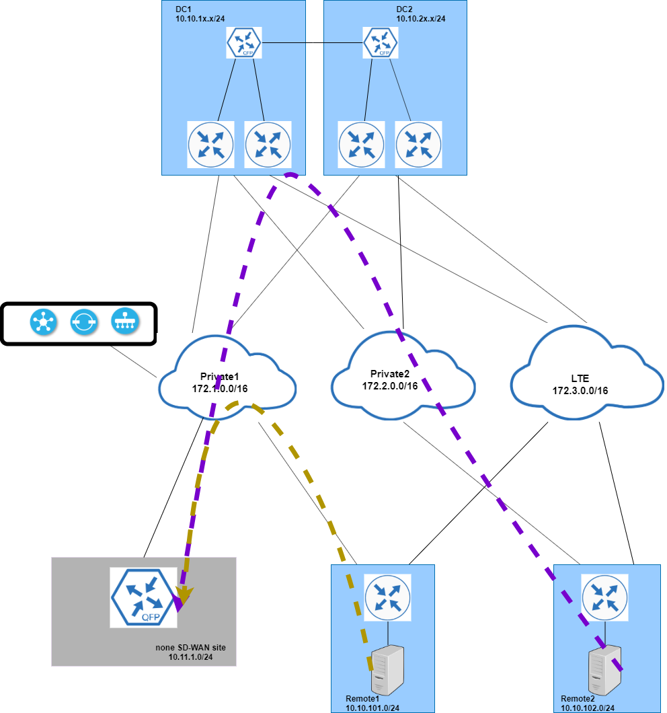

Lab 2: Route to the legacy site
In this section, you will help ACME to configure routing between sd-wan remote sites and legacy none sd-wan site. The legacy site is connected to SP priviate1 with OSPF as CE-PE protocol. Legacy site prefix 10.11.1.0/24 is advertised to private1 PE router; DC WAN Edge routers are receiving this prefix from service side over BGP.

To make sure traffic between sd-wan remotes and legacy site use optimal path, ACME requires - SD-WAN site Remote2 uses DC as transit site to reach legacy site over private2. - SD-WAN site Remote1 route directly over private 1 to legacy site.
Step1: Verify current route
-
SSH into ubuntu host in Remote1 and Remote2. |R1-VM1|198.18.133.200:19018| |---|---| |R1-WM1|198.18.133.200:19019|
-
run
traceroute 10.11.1.1from both hosts as show in below sreenshots


As show from the traceroute, ubuntu host from both remote sites are using DC1 as transit site to reach prefix 10.11.1.0/24 from legacy site.
Step2: Route policy for Remote2
The requirement for remote2 is to use DC as transit site and use transport private2. To achieve that, you can modify the central policy created in lab1 to set higher OMP preference for prefix 10.11.1.0/24 from color private2. - login vManage 198.18.133.200 and access policy configuration from Configuration - Policies - Click Custom Options on the upper right corner and select Lists under Centralized Policy as show below.
 - select Prefix and click New Prefix List to add prefix 10.11.1.0/24 for legacy site as show below. Click Add to save new prefix list Legacy_prefix .
- select Prefix and click New Prefix List to add prefix 10.11.1.0/24 for legacy site as show below. Click Add to save new prefix list Legacy_prefix .

- Click Custom Options on the upper right corner and select Topology under Centralized Policy.
- Select Topology policy LAB_Topo_RS2 created in lab1, and click the "..." to Edit.
- Select Route under Sequence Type from the left.

- Click Sequence Rule to add new rule. For omp route that matches Legacy_prefix and private2 color, set Preference 200.
 ##### Note: After save, move the new created rule to the top by drag and drop the sequence number left to the rule.
##### Note: After save, move the new created rule to the top by drag and drop the sequence number left to the rule. - Run
traceroute 10.11.1.1again from Remote2 host and compare the path from previous output.
#### Step3: Route policy for Remote1
The requirement for remote1 is to use private1 route directly to legacy site. To achieve that, you can leak prefix 10.11.1.0/24 from VPN0 into service VPN.
SP private1 uses OSPF as PE-CE routing protocol; create OSPF feature template and attach to R1-WE1 VPN0.
- login vManage 198.18.133.200 and access feature template from Configuration - Template then click Feature
- Click Add Template and select OSPF template as show below.
 - Name the template: Lab_OSPF_VPN0_V01
- Assign Router ID: 1.1.100.1
- Name the template: Lab_OSPF_VPN0_V01
- Assign Router ID: 1.1.100.1
 - Add connected as protocol under REDISTRIBUTE section
- Add connected as protocol under REDISTRIBUTE section
 - enable OSPF Area 0 on interface GigabitEthernet1
- enable OSPF Area 0 on interface GigabitEthernet1

- Access device template from Configuration - Template then locate template Lab_R1_V01. Click "..." for more option and select Edit.
- Move to Transport & Management VPN section, Add Cisco OSPF template and select Lab_OSPF_VPN0_V01 from dropdown list.

- Update the device template and trigger vManage to update R1-VE1 configuration.
- After vManage complete the push, SSH into R1-WE1 to verify new OSPF neighbor and routes learned OSPF routes.

 Configure route leaking between VPN0 and service VPN, so R1-WE1 will use the OSPF route learned from OSPF in VPN0 for prefix 10.11.1.0/24
- login vManage 198.18.133.200 and access feature template from Configuration - Template then click Feature
- Locate existing template "Lab_Remote_VPN1_V01". Click "..." for more option and select Edit.
- Move to Global Route Leak section. Add OSPF under Add New Route Leak from Global VPN to Service VPN
- Add connected under Add New Route Leak from Service VPN to Global VPN
Configure route leaking between VPN0 and service VPN, so R1-WE1 will use the OSPF route learned from OSPF in VPN0 for prefix 10.11.1.0/24
- login vManage 198.18.133.200 and access feature template from Configuration - Template then click Feature
- Locate existing template "Lab_Remote_VPN1_V01". Click "..." for more option and select Edit.
- Move to Global Route Leak section. Add OSPF under Add New Route Leak from Global VPN to Service VPN
- Add connected under Add New Route Leak from Service VPN to Global VPN

- Update the template to trigger configuration push from vManage to R1-WE1
Note: As optional task, you can add route policy to limit the routes being leaked between Global and service VPN
- SSH into R1-WE1 to verify route 10.10.101.0/24being added in global route table

- SSH into R1-WE1 to verify route 10.11.1.0/24 being added in VRF 1 route table. The SP prefixes 172.1.x.0 are also leaked into service VPN which can be limited from additional route policy in previous step.

- Now let's verify the new route path from remote1 Ubuntu host. Run traceroute 10.11.1.1 again from Remote1 host and compare the result from previous output.